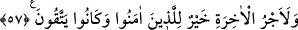

Hayâlin gözümde, yâdın dilimde
Sevgin kalbimdeyken nasıl uzak sayarım seni?
57. Îman edip de (kötülüklerden) sakınanlar için âhiret mükâfatı daha hayırlıdır.
“Îman edip de” kötülüklerden, küfür ve çirkinliklerden “sakınanlar için âhiret
mükâfâtı”; yani onların âhiretteki ödülü, bitmek tükenmek bilmeyen ebedî nimetler
“daha hayırlıdır.” Çünkü hem hadd-i zatında daha üstün, daha büyük ve daha
devamlıdır. Yûsuf (a.s.) da ihsânı, güzel davranması ve takvâsı sayesinde kuyunun
dibinden pâdişahlık taht ve mansıbına ulaştı.
Dünyada ve âhirette kim kadr u kıymet bulduysa
O kimse sabır ve takvâ tarafına koştu
Âyette mü’min ve müttakîden başkası için âhirette hiçbir nasip olmadığına işaret
vardır.
Âriflerden birisi şöyle der: “Dünya fânî bir altın, âhiret ise bâkî bir çömlek olsaydı
bile âhiret dünyadan daha hayırlı olurdu. Kaldı ki dünya fânî bir çömlek iken, âhiret
bâkî bir altındır.”
Ebû Hüreyre (r.a.)’ın şöyle dediği rivâyet edilir:
Biz bir gün:
–“Yâ Rasûlallah! Cennet neden yaratılmıştır?” diye sorduk. Hz. Peygamber (a.s.):
–“Sudan.” buyurdu.
–“Bize cennetin yapısından haber ver.” dedik. Buyurdular ki:
–“Cennetin tuğlaları altın ve gümüş, harcı ise keskin kokulu misk, toprağı safran,
kumu inci ve yakuttur. Oraya giren nimetlere erer, ebedî olur ve ölmez. Ne elbiseleri
eskir, ne de gençliği elden gider. Cennetlikler dünyadayken nasıl gün geçtikçe
yaşlanıyor idiyseler burada günden güne daha da güzel ve cemâl sâhibi olurlar.”[60]
Öyleyse tâatlerde bulunmak gereklidir. Çünkü tâat, derecelerin tohumu
mesâbesindedir ki karşılığı cennetlerdir.
Hikâye edilir ki İbrâhim b. Edhem bir gün hamama girmek istedi. Fakat hamamcı
ücret ödemeden içeri girmesine mânî oldu. Ağlayarak şöyle dedi: “Şeytanın evine bile
bedava girmeme izin verilmiyorsa, peygamberlerin ve sıddîkların evine girmeme nasıl
olur da ücretsiz izin verilir?”
Fakir (Bursevî) der ki: Şâyet peygamberlerin eviyle cenneti kasdediyorsa oraya